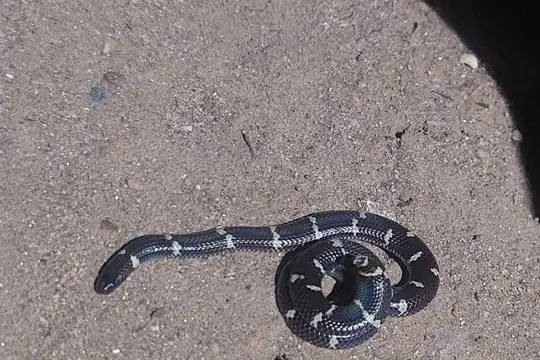
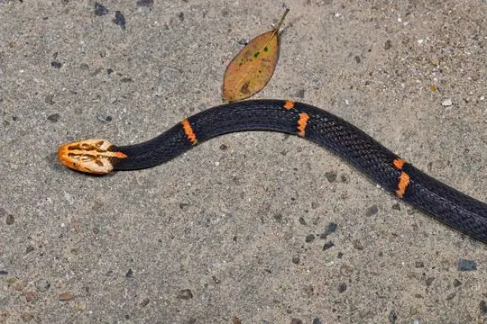
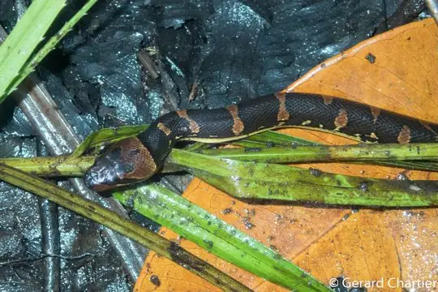
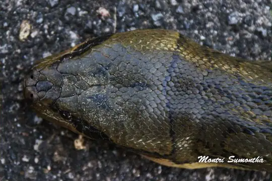
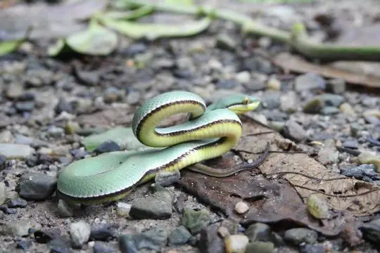
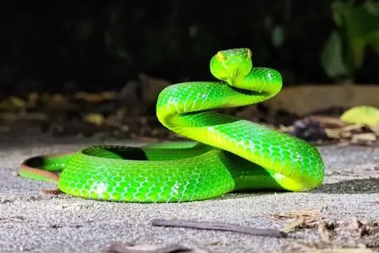
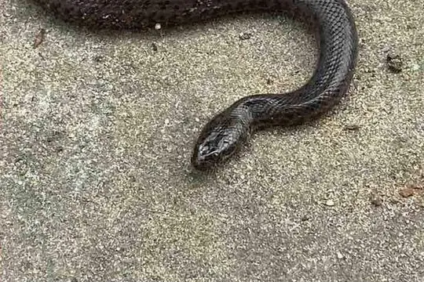
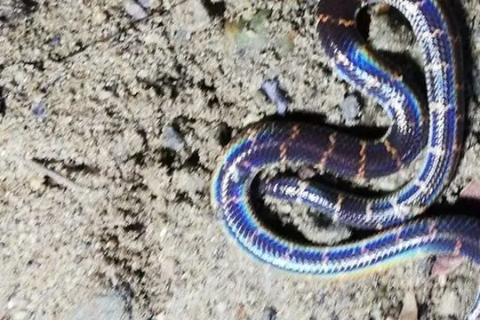
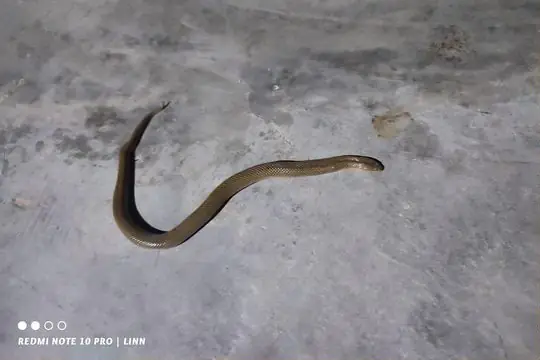

Snakes of Myanmar
178 snake species are recorded in Myanmar in SnakeList: 62 venomous and 116 non-venomous, from 11 families.
- 178species
- 62venomous
- 116non-venomous
- 11families
These totals count the snakes SnakeList records as living in Myanmar. A species counts if it is recorded anywhere in the country, so not every snake lives in every region.
Species
Showing 178 species
- No photo yetAndaman Island Worm SnakeArgyrophis oatesii
 Anderson’s Slug SnakePareas andersonii
Anderson’s Slug SnakePareas andersonii Annulated Sea SnakeHydrophis cyanocinctus
Annulated Sea SnakeHydrophis cyanocinctus Ashy Kukri SnakeOligodon cinereus
Ashy Kukri SnakeOligodon cinereus Asian Vine SnakeAhaetulla prasina
Asian Vine SnakeAhaetulla prasina Assam Kukri SnakeOligodon catenatus
Assam Kukri SnakeOligodon catenatus Assam Mountain SnakePlagiopholis nuchalis
Assam Mountain SnakePlagiopholis nuchalis Assamese Cat SnakeBoiga quincunciata
Assamese Cat SnakeBoiga quincunciata Bamboo PitviperTrimeresurus erythrurus
Bamboo PitviperTrimeresurus erythrurus Banded KraitBungarus fasciatus
Banded KraitBungarus fasciatus Banded Wolf SnakeLycodon fasciatus
Banded Wolf SnakeLycodon fasciatus Bella Rat SnakeArchelaphe bella
Bella Rat SnakeArchelaphe bella Big-tooth SnakeLycodon flavozonatus
Big-tooth SnakeLycodon flavozonatus Black Slug SnakePareas modestus
Black Slug SnakePareas modestus Black-banded Sea SnakeHydrophis nigrocinctus
Black-banded Sea SnakeHydrophis nigrocinctus Blakeway's Mountain SnakePlagiopholis blakewayi
Blakeway's Mountain SnakePlagiopholis blakewayi Blanford's Bridal SnakeLycodon davisonii
Blanford's Bridal SnakeLycodon davisonii- No photo yetBlanford's Mud SnakeGyiophis maculosus
 Blue Coral SnakeCalliophis bivirgatus
Blue Coral SnakeCalliophis bivirgatus Blue-eyed Bush Rat SnakeGonyosoma coeruleum
Blue-eyed Bush Rat SnakeGonyosoma coeruleum Blyth's Reticulate SnakeBlythia reticulata
Blyth's Reticulate SnakeBlythia reticulata Boie's Mud SnakeHypsiscopus plumbea
Boie's Mud SnakeHypsiscopus plumbea Brown Spotted PitviperProtobothrops mucrosquamatus
Brown Spotted PitviperProtobothrops mucrosquamatus Brown Trapezoid SnakeSmithophis bicolor
Brown Trapezoid SnakeSmithophis bicolor Brown Wolf SnakeLycodon effraenis
Brown Wolf SnakeLycodon effraenis Buff Striped KeelbackAmphiesma stolatum
Buff Striped KeelbackAmphiesma stolatum Burmese BronzebackDendrelaphis subocularis
Burmese BronzebackDendrelaphis subocularis Burmese Keelback Water SnakeXenochrophis bellulus
Burmese Keelback Water SnakeXenochrophis bellulus Burmese KraitBungarus magnimaculatus
Burmese KraitBungarus magnimaculatus
Burmese Pipe-SnakeCylindrophis burmanus Burmese PythonPython bivittatus
Burmese PythonPython bivittatus Cantor's Kukri SnakeOligodon cyclurus
Cantor's Kukri SnakeOligodon cyclurus Cantor's water snakeCantoria violacea
Cantor's water snakeCantoria violacea Cave RacerElaphe taeniura
Cave RacerElaphe taeniura- No photo yetCheckered KeelbackXenochrophis piscator
 Chequered KeelbackFowlea piscator
Chequered KeelbackFowlea piscator Chin Hills KeelbackHebius venningi
Chin Hills KeelbackHebius venningi Chinese Keelback Water SnakeTrimerodytes percarinatus
Chinese Keelback Water SnakeTrimerodytes percarinatus Chinese Mountain Pit ViperOvophis monticola
Chinese Mountain Pit ViperOvophis monticola Chinese Slug SnakePareas chinensis
Chinese Slug SnakePareas chinensis- No photo yetCollared Kukri SnakeOligodon torquatus
 Collared Reed Snake (pavimentata)Calamaria pavimentata
Collared Reed Snake (pavimentata)Calamaria pavimentata- No photo yetCollared Sea SnakeHydrophis stricticollis
 Common KraitBungarus caeruleus
Common KraitBungarus caeruleus Common Many-tooth SnakeSibynophis collaris
Common Many-tooth SnakeSibynophis collaris Common Mock ViperPsammodynastes pulverulentus
Common Mock ViperPsammodynastes pulverulentus Common RingneckGongylosoma scriptum
Common RingneckGongylosoma scriptum Common sea kraitLaticauda laticaudata
Common sea kraitLaticauda laticaudata Common SeasnakeHydrophis schistosus
Common SeasnakeHydrophis schistosus Common Wolf Snake (aulicus)Lycodon aulicus
Common Wolf Snake (aulicus)Lycodon aulicus Common Wolf Snake (capucinus)Lycodon capucinus
Common Wolf Snake (capucinus)Lycodon capucinus Daudin's BronzebackDendrelaphis tristis
Daudin's BronzebackDendrelaphis tristis Diard's BlindsnakeArgyrophis diardii
Diard's BlindsnakeArgyrophis diardii Dog-faced Water SnakeCerberus rynchops
Dog-faced Water SnakeCerberus rynchops Dog-toothed Cat SnakeBoiga cynodon
Dog-toothed Cat SnakeBoiga cynodon- No photo yetDoria's Green SnakePtyas doriae
 Dragon snakeXenodermus javanicus
Dragon snakeXenodermus javanicus Dwarf SeasnakeHydrophis caerulescens
Dwarf SeasnakeHydrophis caerulescens Eastern bronzeback tree snakeDendrelaphis proarchos
Eastern bronzeback tree snakeDendrelaphis proarchos Eastern Russel's ViperDaboia siamensis
Eastern Russel's ViperDaboia siamensis Eastern Trinket SnakeElaphe cantoris
Eastern Trinket SnakeElaphe cantoris- No photo yetEstuarine Sea SnakeHydrophis obscurus
 Fasciolated Kukri SnakeOligodon fasciolatus
Fasciolated Kukri SnakeOligodon fasciolatus
Fea ViperAzemiops feae Flat-headed Kukri SnakeOligodon planiceps
Flat-headed Kukri SnakeOligodon planiceps Gerard's water snakeGerarda prevostiana
Gerard's water snakeGerarda prevostiana Gold-ringed Cat Snake (dendrophila)Boiga dendrophila
Gold-ringed Cat Snake (dendrophila)Boiga dendrophila Gore's Bronzeback (biloreatus)Dendrelaphis biloreatus
Gore's Bronzeback (biloreatus)Dendrelaphis biloreatus Gore's Bronzeback (walli)Dendrelaphis walli
Gore's Bronzeback (walli)Dendrelaphis walli Gray Cat SnakeBoiga siamensis
Gray Cat SnakeBoiga siamensis Gray's Kukri SnakeOligodon dorsalis
Gray's Kukri SnakeOligodon dorsalis Green Bamboo Leaf Pit ViperTrimeresurus medoensis
Green Bamboo Leaf Pit ViperTrimeresurus medoensis Green Cat SnakeBoiga cyanea
Green Cat SnakeBoiga cyanea Green KeelbackRhabdophis nigrocinctus
Green KeelbackRhabdophis nigrocinctus Green Rat Snake (nigromarginata)Ptyas nigromarginata
Green Rat Snake (nigromarginata)Ptyas nigromarginata Green Trinket SnakeGonyosoma prasinum
Green Trinket SnakeGonyosoma prasinum Green Vine Snake (nasuta)Ahaetulla nasuta
Green Vine Snake (nasuta)Ahaetulla nasuta Gumprecht's Pit ViperTrimeresurus gumprechti
Gumprecht's Pit ViperTrimeresurus gumprechti- No photo yetGunther's Blind SnakeArgyrophis bothriorhynchus
 Guo's Green Pit ViperTrimeresurus guoi
Guo's Green Pit ViperTrimeresurus guoi Günther's Many-tooth SnakeSibynophis bistrigatus
Günther's Many-tooth SnakeSibynophis bistrigatus Günther's Reed SnakeLiopeltis frenata
Günther's Reed SnakeLiopeltis frenata- No photo yetGünther's sea snakeMicrocephalophis cantoris
 Haas's Bronzeback SnakeDendrelaphis haasi
Haas's Bronzeback SnakeDendrelaphis haasi Hampton's Kukri SnakeOligodon hamptoni
Hampton's Kukri SnakeOligodon hamptoni Hampton's Slug SnakePareas hamptoni
Hampton's Slug SnakePareas hamptoni Hubei KeelbackRhabdophis nuchalis
Hubei KeelbackRhabdophis nuchalis Indian Rock PythonPython molurus
Indian Rock PythonPython molurus Indo-Chinese Rat SnakePtyas korros
Indo-Chinese Rat SnakePtyas korros Indo-Chinese Sand SnakePsammophis indochinensis
Indo-Chinese Sand SnakePsammophis indochinensis
Jack's Water SnakeHomalopsis mereljcoxi- No photo yetJerdon's Sea SnakeHydrophis jerdonii
- No photo yetJerdon's Worm SnakeIndotyphlops jerdoni
 Kaulback's Lance-headed PitviperProtobothrops kaulbacki
Kaulback's Lance-headed PitviperProtobothrops kaulbacki Keel-bellied Water SnakeBitia hydroides
Keel-bellied Water SnakeBitia hydroides Keeled Rat SnakePtyas carinata
Keeled Rat SnakePtyas carinata Khasi KeelbackHebius khasiensis
Khasi KeelbackHebius khasiensis King CobraOphiophagus hannah
King CobraOphiophagus hannah- No photo yetKundu's Wolf SnakeLycodon kundui
 Kutkai KeelbackHebius bitaeniatus
Kutkai KeelbackHebius bitaeniatus Lead KeelbackRhabdophis plumbicolor
Lead KeelbackRhabdophis plumbicolor Leonard's KeelbackRhabdophis leonardi
Leonard's KeelbackRhabdophis leonardi Light-barred Kukri SnakeOligodon albocinctus
Light-barred Kukri SnakeOligodon albocinctus Linne's Water SnakeHomalopsis buccata
Linne's Water SnakeHomalopsis buccata MacLelland's Coral SnakeSinomicrurus macclellandi
MacLelland's Coral SnakeSinomicrurus macclellandi Malayan Banded Wolf SnakeLycodon subcinctus
Malayan Banded Wolf SnakeLycodon subcinctus Malayan Brown SnakeXenelaphis hexagonotus
Malayan Brown SnakeXenelaphis hexagonotus Malayan WhipsnakeAhaetulla mycterizans
Malayan WhipsnakeAhaetulla mycterizans Mandalay CobraNaja mandalayensis
Mandalay CobraNaja mandalayensis Mandarin RatsnakeEuprepiophis mandarinus
Mandarin RatsnakeEuprepiophis mandarinus Many-spotted Cat SnakeBoiga multomaculata
Many-spotted Cat SnakeBoiga multomaculata
Martaban Water SnakeHomalopsis semizonata
Maya's pit viperTrimeresurus mayaae McDougall's Kukri SnakeOligodon mcdougalli
McDougall's Kukri SnakeOligodon mcdougalli Modest KeelbackHebius modestus
Modest KeelbackHebius modestus- No photo yetMon pythonPython kyaiktiyo
 Monocled CobraNaja kaouthia
Monocled CobraNaja kaouthia Müller's Blind SnakeArgyrophis muelleri
Müller's Blind SnakeArgyrophis muelleri
Nabang PitviperTrimeresurus caudornatus Nepal PitviperTrimeresurus septentrionalis
Nepal PitviperTrimeresurus septentrionalis Northeastern Hill KraitBungarus bungaroides
Northeastern Hill KraitBungarus bungaroides Northern Red-necked KeelbackRhabdophis helleri
Northern Red-necked KeelbackRhabdophis helleri Orange-collared KeelbackRhabdophis himalayanus
Orange-collared KeelbackRhabdophis himalayanus Oriental RatsnakePtyas mucosa
Oriental RatsnakePtyas mucosa Ornate Sea SnakeHydrophis ornatus
Ornate Sea SnakeHydrophis ornatus Paradise Tree SnakeChrysopelea paradisi
Paradise Tree SnakeChrysopelea paradisi Pegu Kukri SnakeOligodon cruentatus
Pegu Kukri SnakeOligodon cruentatus Pope's Bamboo Pit ViperTrimeresurus popeiorum
Pope's Bamboo Pit ViperTrimeresurus popeiorum Radiated RatsnakeCoelognathus radiatus
Radiated RatsnakeCoelognathus radiatus Rainbow Mud SnakeEnhydris enhydris
Rainbow Mud SnakeEnhydris enhydris- No photo yetRangoon Sea SnakeHydrophis hendersoni
 Red Bamboo SnakeOreocryptophis porphyraceus
Red Bamboo SnakeOreocryptophis porphyraceus Red-headed KraitBungarus flaviceps
Red-headed KraitBungarus flaviceps Red-tailed Pipe SnakeCylindrophis ruffus
Red-tailed Pipe SnakeCylindrophis ruffus River Vine SnakeAhaetulla fronticincta
River Vine SnakeAhaetulla fronticincta Russell's ViperDaboia russelii
Russell's ViperDaboia russelii
Salween River Basin Mud SnakeGyiophis salweenensis- No photo yetSamagutin Worm SnakeIndotyphlops tenuicollis
 Sand Snake (condanarus)Psammophis condanarus
Sand Snake (condanarus)Psammophis condanarus Sawtooth-necked BronzebackDendrelaphis nigroserratus
Sawtooth-necked BronzebackDendrelaphis nigroserratus- No photo yetScarce Bridal SnakeLycodon gracilis
 Shore Pit ViperTrimeresurus purpureomaculatus
Shore Pit ViperTrimeresurus purpureomaculatus Siebold's Mud SnakeFerania sieboldii
Siebold's Mud SnakeFerania sieboldii Sikkim KeelbackHerpetoreas sieboldii
Sikkim KeelbackHerpetoreas sieboldii
Slowinski's pipe snakeCylindrophis slowinskii Speckled Coral Snake (maculiceps)Calliophis maculiceps
Speckled Coral Snake (maculiceps)Calliophis maculiceps Spiny-headed SeasnakeHydrophis peronii
Spiny-headed SeasnakeHydrophis peronii Splendid Kukri SnakeOligodon splendidus
Splendid Kukri SnakeOligodon splendidus Spotted Keelback Water SnakeFowlea punctulatus
Spotted Keelback Water SnakeFowlea punctulatus Spotted Slug SnakePareas macularius
Spotted Slug SnakePareas macularius St. John's KeelbackFowlea sanctijohannis
St. John's KeelbackFowlea sanctijohannis Stolickza's RingneckLiopeltis stoliczkae
Stolickza's RingneckLiopeltis stoliczkae Stoliczk's Tawny Cat SnakeBoiga stoliczkae
Stoliczk's Tawny Cat SnakeBoiga stoliczkae Striped Sea SnakeHydrophis fasciatus
Striped Sea SnakeHydrophis fasciatus Suzhen’s kraitBungarus suzhenae
Suzhen’s kraitBungarus suzhenae Taron KeelbackHebius taronensis
Taron KeelbackHebius taronensis- No photo yetTawny Cat Snake (ochracea)Boiga ochracea
 Theobald's Kukri SnakeOligodon theobaldi
Theobald's Kukri SnakeOligodon theobaldi Triangle KeelbackXenochrophis trianguligerus
Triangle KeelbackXenochrophis trianguligerus Twin-spotted Wolf SnakeLycodon jara
Twin-spotted Wolf SnakeLycodon jara- No photo yetVictoria slug snakePareas victorianus
 Vindum's Slug EaterPareas vindumi
Vindum's Slug EaterPareas vindumi- No photo yetVoris' Mud SnakeGyiophis vorisi
 Wall's BronzebackDendrelaphis cyanochloris
Wall's BronzebackDendrelaphis cyanochloris Wall's KeelbackHerpetoreas xenura
Wall's KeelbackHerpetoreas xenura White-banded Wolf SnakeLycodon septentrionalis
White-banded Wolf SnakeLycodon septentrionalis White-headed Blind SnakeIndotyphlops albiceps
White-headed Blind SnakeIndotyphlops albiceps White-lipped PitviperTrimeresurus albolabris
White-lipped PitviperTrimeresurus albolabris Yellow Sea SnakeHydrophis spiralis
Yellow Sea SnakeHydrophis spiralis Yellow-lipped Sea KraitLaticauda colubrina
Yellow-lipped Sea KraitLaticauda colubrina Yellow-spotted Keelback Water SnakeFowlea flavipunctatus
Yellow-spotted Keelback Water SnakeFowlea flavipunctatus Yunnan keelbackHebius clerki
Yunnan keelbackHebius clerki Yunnan Pit ViperTrimeresurus yunnanensis
Yunnan Pit ViperTrimeresurus yunnanensis Zaw's Wolf SnakeLycodon zawi
Zaw's Wolf SnakeLycodon zawi Zayuan mountain pitviperOvophis zayuensis
Zayuan mountain pitviperOvophis zayuensis Hebius nigriventer
Hebius nigriventer
Myanophis thanlyinensis- No photo yetTrimeresurus yingjiangensis
No snakes in Myanmar match.
Myanmar’s snakes in numbers
- Families: Colubridae 94, Elapidae 27, Viperidae 19, Homalopsidae 14, Pareidae 7, Typhlopidae 7, Cylindrophiidae 3, Pythonidae 3, Psammophiidae 2, Pseudaspididae 1, Xenodermidae 1.
- 21 are recorded in no other country in SnakeList: Blanford's Mud Snake, Burmese Keelback Water Snake, Burmese Krait, Burmese Pipe-Snake, Collared Kukri Snake, Flat-headed Kukri Snake, Gore's Bronzeback (walli), Kundu's Wolf Snake, Mandalay Cobra, Martaban Water Snake, McDougall's Kukri Snake, Mon python and 9 more.